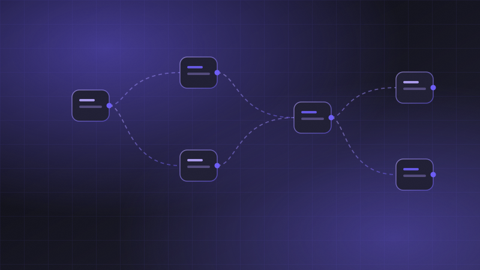
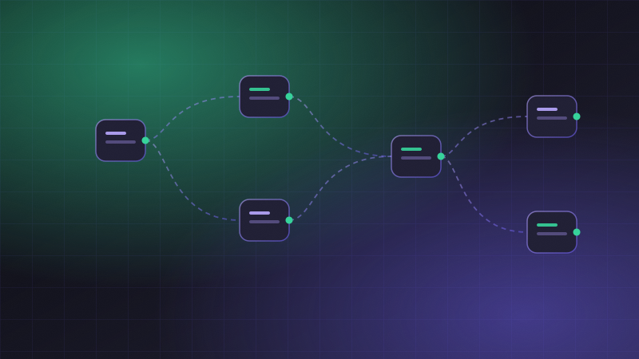

Why grounded retrieval beats a bigger model every time
The teams getting real value from AI are not the ones with the largest context window. They are the ones who solved retrieval.
Engineering deep-dives, automation playbooks and the occasional post-mortem. Written by the people who build Stackly.
The teams getting real value out of AI are not the ones with the largest context window — they are the ones who solved retrieval. Here is the architecture we landed on after 18 months and two false starts.
10 articles
The teams getting real value from AI are not the ones with the largest context window. They are the ones who solved retrieval.
We measured what 40 companies actually spend assembling numbers a machine could have assembled. The figure is worse than you think.
A deep dive into the scheduler rewrite: warm pools, speculative execution, and the bug that cost us three weeks.
A plain-English guide for buyers who have to evaluate vendors but never wanted to become auditors.

Full autonomy sounds impressive in a demo and terrifying in production. Here is the pattern that works.
Most data tools are built for people who love data. Most users are not those people.

Lead routing, renewal alerts, invoice reconciliation, churn signals and QBR prep — ranked by payback period.
Contract tests, recorded fixtures, and a nightly canary that has caught 31 breaking changes before customers did.
Every toggle is a decision you are outsourcing to your user. We audited ours and most of them were cowardice.
Architecture, contracts and the technical controls that make "we do not train on your data" a verifiable claim.